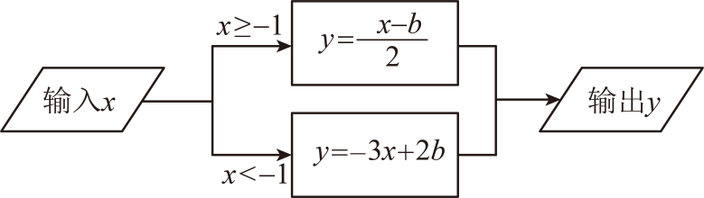
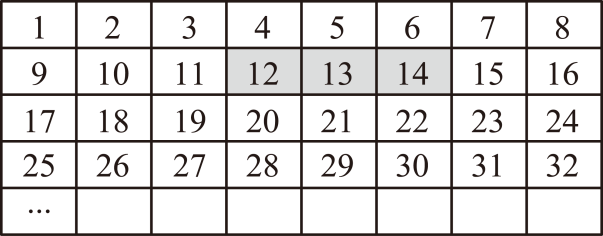

第五章 一元一次方程（举一反三讲义）全章题型归纳
【北师大版2024】

【基础巩固】 1
【题型1 一元一次方程的定义】 1
【题型2 一元一次方程的解】 2
【题型3 等式的基本性质】 2
【题型4 解一元一次方程】 3
【能力提升】 3
【题型5 根据一元一次方程解的关系求参数】 3
【题型6 整体思想求一元一次方程的解】 4
【题型7 一元一次方程的应用】 4
【思维拓展】 6
【题型8 解含绝对值的一元一次方程】 6
【题型9 利用一元一次方程解决规律问题】 6
【题型10 含字母系数的一元一次方程的解法】 7

【基础巩固】
【题型1 一元一次方程的定义】
【例1】（24-25七年级上·河南·期末）若方程m−1x2+mx−x+2=0是关于x的一元一次方程，则m的值为（ ）
A．1 B．1或−1 C．−1 D．2
【变式1-1】（24-25七年级上·甘肃白银·阶段练习）下列方程是一元一次方程的是（ ）
A．2x+3y=9 B．x2−2x=4 C．1x=1 D．12x−1=3x
【变式1-2】关于x的方程2xm−3m=0是一元一次方程，则m= ．
【变式1-3】在已知下列方程：① x−2=2x，② 0.3x=1，③ x2=5x−1，④ 2x2−3=0，⑤ x=6，⑥ x+y=0，其中是一元一次方程的有（ ）
A．5个 B．4个 C．3个 D．2个
【题型2 一元一次方程的解】
【例2】（24-25七年级上·安徽合肥·期末）若x=2是关于x的一元一次方程ax−b−4=0的解，则1−4a+2b的值是 ．
【变式2-1】（24-25七年级上·天津河西·期末）x=3是下列哪个方程的解（ ）
A．5x−2=4x+1 B．5x−2=4x−1
C．5x+2=4x−1 D．5x+2=−4x−1
【变式2-2】（24-25七年级下·全国·单元测试）已知x=2是关于x的方程12a+x=a⋅x+1的解，则a的值是（ ）
A．23 B．45 C．1 D．−2
【变式2-3】（24-25七年级下·福建泉州·期中）整式ax+b的值随着x的取值的变化而变化，如表是当x取不同的值时对应的整式的值：
x | −1 | 0 | 1 | 2 | 3 |
ax+b | −8 | −4 | 0 | 4 | 8 |
则关于x的方程−ax−b=−4的解是 ．
【题型3 等式的基本性质】
【例3】（2025·安徽滁州·三模）已知a，b，c均为非实数，且13a−112b=14c，则下列结论正确的是（ ）
A．若c=3b，则a=4c B．若a=b，则b=c
C．若b>0，则4a<3c D．a+c=1123a−b+4c
【变式3-1】已知8m+3n+2=4m+7n，利用等式的性质比较m与n的大小关系：m n.(填“>”“<”或“=”)
【变式3-2】（24-25七年级下·浙江杭州·期末）若商品的进价为a，售价为b，则毛利率p=b−abb>a，把这个公式变形成已知p，a，求b的公式，应为（ ）
A．b=b−ap B．b=pb+a C．b=a1−p D．b=a1+p
【变式3-3】（24-25七年级上·内蒙古乌兰察布·期末）下列变形：①如果a2=3a，那么a=3；②如果ac=bc，那么a=b；③如果1a=1b那么a=b；④如果a=b，那么ac2+1=bc2+1．其中正确的是 ．（填序号）
【题型4 解一元一次方程】
【例4】（24-25七年级上·安徽六安·期中）小强在解方程“−3x−1=2x+k”时，将“−3x”中的“−”抄漏了，得出x=4，则原方程正确的解是（ ）
A．x=−45 B．x=45 C．x=25 D．x=4
【变式4-1】（24-25七年级下·山西临汾·期中）若代数式4x+5与2x+3的值互为相反数，则x等于（ ）
A．−43 B．43 C．−1 D．34
【变式4-2】（24-25七年级上·广东深圳·期中）按如图所示的程序进行计算，若输入x的值是3，则输出y的值为1．若输出y的值为3，则输入x的值是（ ）

A．7 B．−13 C．7或−13 D．−7或13
【变式4-3】（25-26七年级上·全国·课后作业）方程x2×4+x4×6+⋯+x2024×2026=2024的解是 ．
【能力提升】
【题型5 根据一元一次方程解的关系求参数】
【例5】（24-25七年级下·吉林长春·阶段练习）若关于x的方程3x+2=2x−5的解与方程253x+2=k10+32x−1的解互为相反数，则k的值为 ．
【变式5-1】（24-25七年级上·新疆阿克苏·期末）若方程x+3=0的解与关于x的方程3x+2=k−12的解相同，则k的值为 ．
【变式5-2】关于x的方程5m+4x=1+2x的解比关于x的方程2x+5m=7m的解大2，则m的值为（ ）
A．−37 B．37 C．57 D．−57
【变式5-3】（24-25八年级上·贵州铜仁·期中）对于一些特殊的方程，我们给出两个定义：①若两个方程有相同的解，则称这两个方程为“相似方程”；若两个方程有相同的整数解，则称这两个方程为“相伴方程”．
(1)判断方程6−41−x=2x与3x−1x+2=−4是否为“相似方程”，并说明理由；
(2)已知关于x，y的二元一次方程y=mx+6和y=x+4m是“相伴方程”，求正整数m的值．
【题型6 整体思想求一元一次方程的解】
【例6】（24-25七年级下·山西吕梁·期中）在解一元一次方程时，有时根据方程的表面特点，巧妙利用整体法，可以达到简化计算的效果．
例如：在解方程512x+13−712x+13+2=−12x+13时，把12x+13看作一个整体．
令m=12x+13，原方程变为5m−7m+2=−m，
移项，得5m−7m+m=−2，
合并同类项，得−m=−2．
系数化为1，得m=2，
故12x+13=2，解得x=103．
阅读以上材料，请用同样的方法解方程：20258x+3−20248x+3−5=28x+3．
【变式6-1】整体法解方程∶5(4x+6)−34(x−1)=2(x−1)−14(4x+6)．
【变式6-2】（25-26七年级上·全国·课后作业）整体法解方程：42x+2−122x+4+5=1．
【变式6-3】（24-25六年级上·上海·阶段练习）若关于x的一元一次方程12024x+3=2x+b的解为x=−3，则关于y的一元一次方程120241−y=−2y−1+b的解为 ．
【题型7 一元一次方程的应用】
【例7】（24-25七年级上·辽宁铁岭·期末）春节将至，中央广播电视总台《2025年春节联欢晚会》发布官方吉祥物形象“巳升升”，祝福全球华人在新的一年如意康宁，好事连连．“巳升升”吉祥物摆件也随之热销，某超市用18000元从厂家购进了300个“巳升升”摆件，并以每个80元的价格销售，销售了一部分后正值元旦促销，该超市将剩下的“巳升升”摆件在原售价的基础上打9折继续销售，并且全部售完．已知这批“巳升升”摆件获得的总利润是4560元．
(1)求每个“巳升升”摆件的进价是多少元？
(2)请你算一算打9折前共售出多少个“巳升升”摆件？
【变式7-1】某服装厂生产一种型号的服装，已知3米长的布料可做2件上衣或3条裤子，一件上衣和一条裤子为一套，现在库内存有这种布料600米，那么一共能加工服装 套．
【变式7-2】又到了春暖花开的时节，淮安外国语学校一年一度的“踏青节”即将拉开帷幕．“烟花三月下扬州”，美丽的瘦西湖成了同学们的首选目标．国家旅游胜地“五星级”风景区瘦西湖的团体参观门票价格规定如下表：
购票人数（人） | 1～50 | 51～100 | 101～150 | 150以上 |
参观门票价格（元/人） | 50 | 45 | 40 | 35 |
去年我校七（1）、（2）两班共103人（其中（1）班人数多于（2）班人数）去参观瘦西湖，如果两班都以班级为单位分别购票，则一共需付4860元．
(1)你认为有没有最节约的购票方法？如果有，可以节约多少元钱？
(2)你能确定两班各有多少名学生吗？
(3)如果本校初一（3）班共45人也一同前去参观，那又如何购票最合理呢？共需多少元钱？
【变式7-3】如图是某市民健身广场的平面示意图，它是由6个正方形拼成的长方形，已知中间最小的正方形A的边长是1米；

（1）若设图中最大正方形B的边长是x米，请用含x的代数式分别表示出正方形F、E、C的边长
（2）观察图形的特点可知，长方形相对的两边是相等的(即MN=PQ， MQ=PN)请根据以上结论，求出x的值
（3）现沿着长方形广场的四条边铺设下水管道，由甲、乙工程队单独铺设分别需要10天、15天完成，如果两队从同一位置开始，沿相反的方向同时施工2天后，因甲队另有任务，余下的工程由乙队单独施工，还要多少天完成?
【思维拓展】
【题型8 解含绝对值的一元一次方程】
【例8】已知关于x的绝对值方程2||x−1|−2|=a有三个解，则a= ．
【变式8-1】解方程0.1x−0.20.02=4−7x．
【变式8-2】解方程：|3x+1|−|1−x|=2．
【变式8-3】已知关于x的方程x−100−150=a有三个解，则a= .
【题型9 利用一元一次方程解决规律问题】
【例9】下列图形都是由面积为1的正方形按一定的规律组成的，其中第1个图形中面积为1的正方形有9个，第2个图形中面积为1的正方形有14个，第3个图形中面积为1的正方形有19个，…，按此规律，则有1104个面积为1的正方形的是（ ）

A．第190个图形 B．第200个图形
C．第210个图形 D．第220个图形
【变式9-1】一只小球落在数轴上的某点P0，第一次从P0向左跳1个单位到P1，第二次从P1向右跳2个单位到P2，第三次从P2向左跳3个单位到P3，第四次从P3向右跳4个单位到P4……若按以上规律跳了200次时，它落在数轴上的点P200所表示的数恰好是2020，则这只小球的初始位置点P0所表示的数是 ．
【变式9-2】如图，是用小圆点按一定的规律组成的“七”字，第1个图形有7个小圆点，第2个图形有12个小圆点，第3个图形有17个小圆点，…，按照这样的规律，有252个小圆点的是第 个图形．
【变式9-3】（2025·河北邯郸·模拟预测）将正整数1至2025按一定规律排列．如图所示．平移表中带阴影的矩形框．矩形框中三个数的和可能是（ ）

A．2024 B．2022 C．2019 D．2040
【题型10 含字母系数的一元一次方程的解法】
【例10】（25-26七年级上·全国·课后作业）若关于x的方程k−2026x−2024=6−2026x+1的解是整数，则整数k的取值有（ ）
A．6个 B．5个 C．3个 D．2个
【变式10-1】已知关于x的方程x−2−ax6=x3−2有非负整数解，则整数a的所有可能的取值的和为（ ）
A．−23 B．23 C．−34 D．34
【变式10-2】若不论k取什么数，关于x的方程2kx+m3−x−nk6=1（m、n是常数）的解总是x=1．则m+n的值是（ ）
A．−0.5 B．−1.5 C．0.5 D．15
【变式10-3】如图，把8张形状大小一样的小长方形卡片（长为a，宽为b）不重叠地放在一个大长方形中，未覆盖部分恰好被分割成两个长方形（阴影部分），若左下方与右上方阴影部分面积的差为2ab，则ba的值为（ ）
A．13 B．14 C．15 D．29